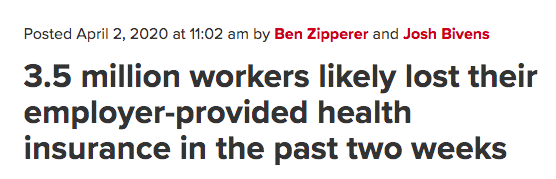
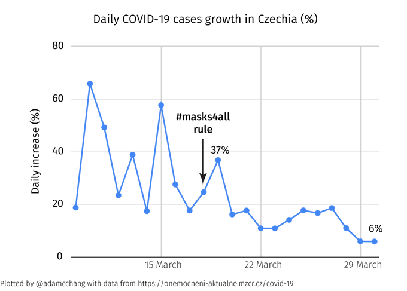
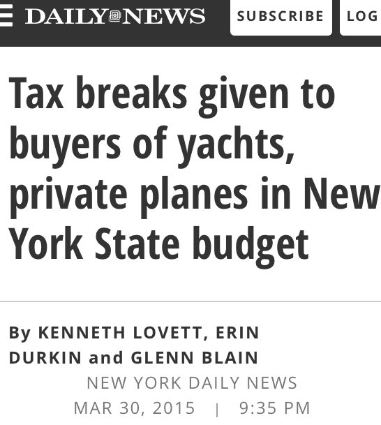

Week 14
Update of econ numbers. VIX is down to 46. Dollar >100.
18 USC §1865 & 36 CFR §10.4 make it a federal crime to take surplus buffaloes from Yellowstone on a train unless they are each in separate crates, but not if you take them away in a truck.
— A Crime a Day (@CrimeADay) April 4, 2020
Of course he was right. He just couldn't sell it.
The Atlantic: "Even before the coronavirus outbreak, many on the “populist,” or “radical,” left insisted that globalization, climate change, automation, and inequality were creating the conditions for their own political resurgence, despite their leaders—Bernie Sanders in the United States, Jeremy Corbyn in Britain—being rejected at the ballot box. Now, in a world where governments are nationalizing wages and public services just to keep their economies afloat, such claims no longer seem far-fetched. Indeed, Corbyn, who will be replaced as Labour leader today, said the emergency economic measures being taken in Britain have proved him 'absolutely right'"
I have to say ppl 3D printing filters, masks is awesome.
JNK, BKLN, .. are corp credit ETFs.
"@TruthGundlach
Corporate credit market is well off its low. Yet financial media narrative is of continued 'thaw' this week. Was there? From the highs of the past week into the close today, here are the returns: LQD -2.6%. BKLN -4.9%. JNK -5.1%"
Hardball 😆😆 I am lovin it
"@spectatorindex
.. Medical masks sold by American firm 3M to Germany were intercepted in Thailand and diverted back to the US"
CDC: "It is critical to emphasize that maintaining 6-feet social distancing remains important to slowing the spread of the virus. CDC is additionally advising the use of simple cloth face coverings to slow the spread of the virus and help people who may have the virus and do not know it from transmitting it to others. Cloth face coverings fashioned from household items or made at home from common materials at low cost can be used as an additional, voluntary public health measure"
Cash is trash?
You need education my brother..
Bloomberg: "Bridgewater’s Main Hedge Fund Loses About 20% in First Quarter"
It's true. We are the virus.
"The sky's never been so blue"
China’s Hebei Approves 1.2 bln dol Hydrogen Production & Consumption Projects-43 #hydrogen projects for production, equipment manufacturing, hydrogen stations & #fuelcells=8.75 billion yuan (1.23 billion dol)-https://t.co/VmY0W4H26Z #hydrogennow #decarbonise #fuelcell #zeroemissions pic.twitter.com/DfVDrWGEvE
— FuelCellsWorks (@fuelcellsworks) April 3, 2020
Liam is short for William?
Maybe it's about stakes.. I mean the stakes the writers, creators of these shows experienced in their lives. Roddenberry was a trained fighter pilot, even in civilian life once his plane came down in Syrian Desert guy broke two ribs but dragged injured passengers out of a plane and led the group to safety. His personal life was scifi, adventure. How can the uppity, LA crackhead, cossetted, bland-life writer compete with this?
Watched an old DS9 ep: Chief's wife gets body snatched by an alien who wants to destroy enemy aliens in a wormhole. She has the Chief to fire a weapon into the wormhole but the Chief figures out with the help of Ferrengi engineer Ram turns the tables on the alien.
Wonderful ep. Why dont we have more ST shows like this anymore? The ep was abt characters, smart, made sense, most chars were likable.
I have a feeling years of especially Rep driven push to gut the government worked, the gov is gutted. Any bureucratic fail I hear recenty I attribute to them.
"The Netherlands want to use their 'unique starting position' in the gas value chain to become world leaders in the production and use of green hydrogen, saying the fuel 'can become a globally traded commodity'
The government’s hydrogen strategy was officially unveiled on Monday (30 March), with a letter presented to the Dutch Parliament"
Haha.. very much on character as in MacKay vs Mrs Miller.
Maybe they spelled “influenza” wrong?
— Kate Hewlett (@katehewlett) April 3, 2020
ArXiV is awesome 👍
"@HigherGeometer
Submitted a paper to a physics journal whose first requirement is: your paper must be on the arXiv, and the first thing we ask for is the arXiv reference number. The metadata is lifted directly, and even the paper's .tex source file if you want"
"@1followernodad
All this because some asshole thousands of years ago invented farming"
"Trial drug can significantly block early stages of COVID-19 in engineered human tissues"
DIY mask
DIE MOTHERFRACKERS
"@Nouriel
Beginning of the great shale debt crisis and domino of bankruptcies...it will become a tsunami and lead to contagion in [high-yield] from energy other highly leveraged sectors....worse than 2015-16!
'Shale group Whiting files for Chapter 11'"
Thing is rents and mortages could be frozen as easily as other countries have done it. But in US so much finance downstream depends on that cash flow whose interruption could cause mayhem that they wld rather supplement that flow rather than freeze it in any way.


Master player DJT
Vintage Trump. He saw how his 10M number got the market up, so he upped it to 15 https://t.co/IwZTYnccUk
— Keith McCullough (@KeithMcCullough) April 2, 2020
This # supports the shit jobs theory.. More expandable jobs than the smokestack industrial jobs probably. By not switching to post-industrial we created something worse, an in-between shitapocalypse, middle meager medium shit jobs. They are thrown away at the first sign of trouble.
"@GreekFire23
6.6 million jobless claims!!!😱😱😱holy cow! The highest claims posted for a week during the financial crisis was 665,000"
When does the "bottom fall outa the dollaah?". I am waiting..
2020-04-01 99.753
Funny (but actually sad) thing abt it is that 6,6M initial claims number is so huge the prev 3+ mil number is dwarfed, the graph still looks freaky, but freaky same way.
This #fuelcell company has pivoted to fixing old ventilators to give to hospitals https://t.co/3GcTg4zrka @Bloom_Energy
— California Hydrogen (@CAHydrogen) April 2, 2020
I am so glad I created my own infrastructure to watch this covid, one keystroke got latest numbers graphs !!
"@spectatorindex
CHINA: City of Shenzhen becomes the first in the country to ban the eating of cats and dogs"
Why the fuck did I buy a 2020 planner
— Pete Blackburn (@PeteBlackburn) March 31, 2020
Haha.. watching Contagion, 2011, one char just said "social distancing"
Global hopes for hydrogen economy revived amid EU push https://t.co/9emKkd1R7S
— FCH JU (@fch_ju) April 2, 2020
RIP. TTUD was a good movie.
There would be no Playtone without Adam Schlesinger, without his That Thing You Do! He was a One-der. Lost him to Covid-19. Terribly sad today. Hanx
— Tom Hanks (@tomhanks) April 2, 2020
1918 and 1929 happening all at once.
California Love - Tupac Shakur #music
Air Liquide.. Capable company. Ah and they do H2. See, never fails
Un exemple parmi tant d’autres de ce que notre industrie française est capable de faire ! #FranceUnie pic.twitter.com/44mUmgkeUI
— Emmanuel Macron (@EmmanuelMacron) March 31, 2020
Good good..
"@adamcchang
Here's what happened in the Czech Republic after they imposed mandatory mask-wearing on March 18th. The daily increase in cases has dropped from over 20% before the #masks4all rule to just 6%"

"@BCAppelbaum
It's illegal for most people but Congress has effectively decided that it's fine for Congress to engage in insider trading"
Bailing Out the Bailout
#taibbi
Proudly South African hydrogen breakthrough with Shell’s backing--Hydrox Holdings unique #hydrogen electrolyzer tech promises to lower production price of hydrogen & serves as a disruptive #hydrogeneconomy enabler-https://t.co/R8j76rnoED #hydrogennow #decarbonise #fuelcells #h2 pic.twitter.com/cGA9DQWJEm
— FuelCellsWorks (@fuelcellsworks) April 1, 2020
So. Q1 was fun.
— Sven Henrich (@NorthmanTrader) March 31, 2020
Wärtsilä Advances Future Fuel Capabilities with First Ammonia Tests--@wartsilacorp is developing ammonia storage & supply systems as part of the EU project ShipFC to install ammonia #fuelcells on Eidesvik Offshore’s supply vessel--https://t.co/uUHUySKPng #fuelcell #zeroemissions pic.twitter.com/i5JD0F0z1c
— FuelCellsWorks (@fuelcellsworks) April 1, 2020
Hah! That's a great idea.
"@koeppelmann
Testing capacity in Germany will be increased by up to factor 10 to up to 400,000 a day (!) by doing pooled testing. E.g mix 16 samples and if negative - all are negative, otherwise binary search for the positve(s). Could of course be used worldwide"
"@Peston
@michaelgove said just now that the difficulty in increasing number of COVID19 tests was due to a shortage of the relevant 'chemcial reagents'. Well I've just talked to the Chemical Industries Association, which represents the UK's very substantial chemicals industry. It has contacted its members, and they've said there is no shortage of the relevant reagents"
A waverider glider will be launched by Brazilian rocket to the high atmosphere, where it will ride its own shock waves at seven times the speed of sound - the HEXAFLY-INT programme with @EU_Commission is our #ESATech image of the week https://t.co/mngo9cfTRf pic.twitter.com/FY1X9NNwSx
— ESA Technology (@ESA_Tech) April 1, 2020
.. so I can exploit you independently.
"@Renegade_Inc
Richard Branson in Anti-Union Video to Employees: 'Protect your Independent Spirit' and 'Say No' to Unions"
Cats!
"We found that SARS-CoV-2 replicates poorly in dogs, pigs, chickens, and ducks, but efficiently in ferrets and cats"
After 10 Workers Get COVID-19, 1,000 Immigrant Meatpackers Walk Off the Job in Colorado
Unpayable Corporate Debt: A Brady Bond Solution for America’s Economic Crisis
#hudson
Chris Isaak – You Owe Me Some Kind Of Love #music
Cold Hearted - Paula Abdul #music
Turns out my top three hobbies are:
— Natalie Gregerson (@nattygeeee) March 30, 2020
1) restaurants
2) bars
3) non-essential businesses
Brit royal Philip: “If it has got four legs and it is not a chair, if it has got two wings and it flies but is not an aeroplane, and if it swims and it is not a submarine, the Cantonese will eat it.”
Journalism fills that gap in modernity; As Toffler said once society is broken up into many pieces someone had to put it together again. The Integrators, the managerial class performed most of that task. But more was needed, in Western, democratic context, that more was the journalists. They carried the gossip, assigned merit and demerit, poked, informed (as much as they could), worked to front-run decision-makers, etc. Important job.
Did you know #electrolysers play a role on submarines? We're pleased to announce a purchase order from the UK Navy for #PEM #electrolyser stacks for use onboard submarines, providing life support oxygen for the crews. See our press release for details: https://t.co/BZLIvdWPcQ pic.twitter.com/uBLvzCZXUU
— Nel Hydrogen (@nelhydrogen) March 31, 2020
"@plutokiller
A hopeful article on how we might already be seeing benefits of social distancing"
Interesting scenario.. corp bonds go trash then they are accepted less and less as collat in repo. People hoard treasuries and dollars, hey instead of losing money isnt it better to keep your money at zero IR or straight up cash? Which means dollar demand, dollar goes up, shortage everywhere.
👍
"@9NewsAdel
South Australian schools are preparing to move more classes online for Term 2, which could have a big impact on staff, students and parents"
Woha
"@kevinhorgan
Conservative Australian PM announced a 3000 dol / month, flat rate, UBI for full time & part-time workers, a 6-month moratorium on Tenant evictions & effective Nationalisation of private hospitals. Best way to sustain economy?"
"@PatHartman_
You know what's weird? After years of using "viral" to describe something that quickly grows to outrageously large numbers... people still don't GET IT"
Have you heard the news? We're pleased to have received funding from the US Department of Energy for the development of a novel #electrolyser cell stack approach for higher efficiency, low cost #hydrogen generation. Learn more from our press release: https://t.co/eyGpDTzFev pic.twitter.com/aNU7FNgIUr
— Nel Hydrogen (@nelhydrogen) March 31, 2020
It doesn’t serve the properties of an electronic cash system. It’s either too slow or too expensive to have a competitive advantage. There are several systems that have all these properties and several serve much better as electronic cash; faster, less expensive, less wasteful.
— Colin LeMahieu (@ColinLeMahieu) March 30, 2020
Haha.. not V, L, W but diminishing sine.. Very funny. Japanification? This is probably where US is headed unless it gets rid of its debt overhang.
"@tracyalloway
Of course, you can't beat the 'diminishing sine wave' shaped-recovery that Deutsche Bank was talking about back in 2009 after the financial crisis"

"@nntaleb
The @WHO shd be renamed WDO (World Disease Organization): had they not existed many lives would have been spared.
Friends are smelling conspiracy in WHO's claims ("evidence based"conflation of absence of evidence for evidence).
No, it's only incompetence.
Criminal incompetence"
Greeks, Romans, Ottocucks knew nothing abt tomatoes. Well Otto found out later bcz these dits actually managed to make it to 20th century, limpin and all, but what I am saying is the phenomenon is recent relatively speaking.
Tomatoes were discovered in America and brought back to Europe, near history. So they are very much American
"@IcarusGlider
This will go on for the rest of the year. 30 more days is wishful thinking. Renters without jobs cant pay rent. Landlords without rent cant pay mortgages. Banks without payments cant pay... on and on and on till something eventually gives"
Seems like people wanted to win, and thought Biden was most electable. In other words, ideology had nothing to do with it. This is why, for example, you saw exit polls showing Biden winning with “very liberal” voters or those that preferred Medicare for all. https://t.co/U5eiq4UtKd
— Every Billionaire Is A Policy Failure (@DanRiffle) March 30, 2020
ORMS = Operations Research and Management Science. Deals with resource planning, optimization of production, logistics, etc.
"@ILjubic
Attention French #orms colleagues:
The ministry of defense launched the call for proposals for innovative projects to fight #COVIDー19 :
Supply chain and logistics solutions are in high demand.
Contact Christian Artigues (director of GDR RO @CNRS"
And Canada hunkers down, like ppl do during cold weather.. I believe Canada's culture code assigned to itself was TO KEEP (says Rapaille). They are about preservation, in large part, I am sure, due to their cold weather.
Funny how characteristically each country reacts to the coronavirus. China tracks its citizens' every move. Hungary becomes a dictatorship. The US gives money to businesses. The Japanese conceal the problem. The British bravely but stupidly seek herd immunity.
— Paul Graham (@paulg) March 30, 2020
Indeed the "missing puzzle piece" to getting to 100% renewables is reliable, scalable, dispatchable #EnergyStorage and #hydrogen is several times better than #conventionalchemistrybatteries including #lithiumion .#renewablegas #powertogas #PTGhttps://t.co/yxVp7MWbe2
— Hydrogen is the battery (@BatteryH2) March 30, 2020
This is not the same as electronic banking. With elec banking u have to figure out the myriad ways your bank allows electronic access. With crypto, receiving payments is as easy as receiving a chat message.
Sad. So much more can be done technologicallly. Open a Nano acct, register that address with the government and they can wire any payment to you at the speed of light. This technology exists.
Modelers unite
Never been more jealous of a curve in my life. Man they nailed it.
— Ben White (@morningmoneyben) March 30, 2020
Via Time. https://t.co/sktEp8booM pic.twitter.com/soPhg4iceJ
Easy recipe: Throw some sp into bowl, dice half onion into it, add olive oil, little water. Cook it medium heat for 5 mins. Cool it, mix plain yoghurt, serve.
Big spinach eater here. I am talking some Popeye level shit. Thing is full of useful ingreds. I looked for a snack bar with it and tada

4% spinach - probably measured in dried form, as weight, fresh spinach is 90% water, so this amt is not bad.. Now part of my breakfast. That and mobile coffee.
BMW Group Reaffirms its Ongoing Commitment to #Hydrogen #FuelCell Technology--Collaboration with @Toyota continues #Fuelcell system for the powertrain for the @BMW i Hydrogen NEXT generates up to 125 kW (170 hp)-https://t.co/rKzBrMtolE #hydrogennow #decarbonise #zeroemissions #h2 pic.twitter.com/PGkZQPWv5m
— FuelCellsWorks (@fuelcellsworks) March 30, 2020
"@fuelcellsworks
Mitsubishi Corporation Signs MoU with Singaporean Companies on Sustainable #Hydrogen Economy--Companies Collaborate to Explore Hydrogen as a #lowcarbon Carbon Alternative for Singapore"
Air Products Signs Agreements to Acquire Five Operating Hydrogen Plants for 530 dol Million and Long-Term #Hydrogen Supply to PBF Energy--https://t.co/s3XYrFproi #hydrogennow #decarbonise #zeroemissions @airproducts #hydrogeneconomy #h2 pic.twitter.com/aavEHgy9Ge
— FuelCellsWorks (@fuelcellsworks) March 30, 2020
"@leashless
So 90% of the crap in the global economy is utterly useless: nobody needs 162 varieties of barbie dolls, or 68 brands of shitty laptops.
Standardize: a few models, done well, durable, for everything. Good for climate, good for covid. Modular, resilient, lean. We can restructure"
Where u going bro? Who's gonna save the world?
Waaa waaa waaa waaaa
👀 @elonmusk is no longer following @CDCgov
— Big Tech Alert (@BigTechAlert) March 29, 2020
.@FusoOfficial has announced its vision to make all new vehicles for the Japanese market CO2-neutral by the year 2039 & plans to start series production of fuel-cell trucks, like the #eCanter F-Cell, by the late 2020s. #sustainability #eMobility pic.twitter.com/suzwfvVfKx
— Daimler Trucks & Buses (@DaimlerTruckBus) March 27, 2020
*DOJ PROBES STOCK TRADES BY LAWMAKERS AFTER VIRUS BRIEFINGS: CNN
— Laura Litvan (@LauraLitvan) March 30, 2020
"@mikejanda
A wage subsidy is a good idea, but probably would’ve been a lot more effective if announced at the same time as the restrictions that effectively shut tens of thousands of businesses. So many workers already laid off and applying for welfare benefits.
'@m_stewart Yup. The model is the way New Zealand did it. I applied for subsidy Tuesday, day after lockdown announcement, in bank account by Thursday, first day of lockdown' "
Great. Each major country needs such capability within their borders.
"German scientist Olfert Landt was already on alert. For 30 years, he had worked on diagnosing emerging diseases, including Severe acute respiratory syndrome (SARS). He wanted to make a test kit to help doctors diagnose the disease -- and he wanted to do it fast. Virologists usually wait until the genetic material of a new virus is sequenced to start working on a test. This time, Landt and his 30-strong company TIB Molbiol got started early. By January 9 they had designed their first test kit using SARS and other known coronaviruses as references. Along with scientists from a local university hospital, he designed three kits, meaning once the sequence was published, they could pick the one that worked best..
In Hong Kong [... another scientist] Poon waited for the sequence.
All forms of life have a type of molecule that carries their genetic instructions. In humans, and most life forms, that's DNA -- the genetic material that tells us to grow two legs and walk upright... But it wasn't until January 11, that the sequenced genome was posted on open-source site virological.org on behalf of Zhang Yongzhen, a professor from Shanghai's Fudan University. Chinese authorities shared the sequence on January 12.
Once Zhang shared the sequence, Poon's team started work... Next, they designed the test"
Heard "there is deceleration of new covid cases in New York". Checked, there is some slowdown. Still I wouldnt call this flattening of the curve. Daily percent changes calculated below. Made use of NYT data.
import pandas as pd, os
import zipfile
with zipfile.ZipFile(os.environ['HOME'] + '/Downloads/corona-county.zip', 'r') as z:
df = pd.read_csv(z.open('us-counties.csv'))
dfnys = df[df['state'] == 'New York']
nys = dfnys.groupby('date')['cases'].sum()
print ('New York State===========')
print ((nys.pct_change()*100.0).tail(6))
print ('New York City============')
dfnyc = df[df['county'] == 'New York City']
nyc = dfnyc.groupby('date')['cases'].sum()
print ((nyc.pct_change()*100.0).tail(6))
New York State===========
date
2020-03-22 46.465817
2020-03-23 37.625264
2020-03-24 22.950898
2020-03-25 28.835814
2020-03-26 17.906069
2020-03-27 14.486509
Name: cases, dtype: float64
New York City============
date
2020-03-22 45.628723
2020-03-23 36.042012
2020-03-24 21.129622
2020-03-25 34.256961
2020-03-26 15.496477
2020-03-27 9.895292
Name: cases, dtype: float64
Bloom Energy is a BUY.
OooooOoooo putting the Bern to task are we? Well he could say this
"@BenLaBolt
This is ... something @BernieSanders needs to work on every day from now until November. He is responsible for the outcome with this segment of voters - and his effort to persuade them to support @JoeBiden should start TODAY"
Corporate-run health insurance isn't about saving lives. It's about making as much money as possible. With Medicare for All we can finally put an end to this international disgrace. https://t.co/sZrb6FcUPz
— Bernie Sanders (@BernieSanders) March 29, 2020
"@wesbury
Novartis CEO 'Pre-clinical studies in animals as well as the first data from clinical studies show that hydroxychloroquine kills the coronavirus'"
Michael Hudson: "You talked about the current generation having to pay off the debts of their predecessors. They’re not going to pay them off, these debts cannot be paid off. They can go bankrupt, they can starve, they can die sooner, but they cannot pay off the debts. Mathematically, there’s no way of these exponential growth in debts being paid off. In the end, every economy reaches a point where the debts cannot be paid and it is a choice: either it can wipe out the debts and grow again, or it can leave the debts in place and let it strangle the economy"
"@zacharylipton
Why is ML [machine learning] .. stealing the spotlight & overshadowing (often-comparable) work? The rapid pace of innovation? The talent? The tooling? I'm inclined to think the major (unsung?) factor might just be the universality of ***open-access publishing***.
I've tried for hours today to access a desired chapter in a philosophy volume that is relevant to my work. Eventually gave up. This pay-wall nonsense is still pervasive in many fields but this would be unthinkable in ML post-2000.
The combination of a universal culture of instantly-accessible research (for both pre-prints and finished works) .. has perhaps uniquely positioned ML steal spotlight from many other fields"
"An effective response to the virus needs to be orchestrated as a coherent system of actions taken simultaneously. The results of the approaches taken in China and South Korea underscore this point. While the public discussion of the policies followed in these countries often focuses on single elements of their models (such as extensive testing), what truly characterizes their effective responses is the multitude of actions that were taken at once"
I lost my Dad this morning to COVID-19. He was my rock, my best friend, and my hero. He had virtually no symptoms and 48 hours later he was fighting for his life. I’m begging you guys from the bottom of my heart, please stay inside and be safe.
— ChicagoTrader (@ChicagoTraderrr) March 27, 2020
i've got an idea https://t.co/PJ3OSEi4WJ
— Elizabeth Bruenig (@ebruenig) March 29, 2020
Govs can provide an API, a machine digestible data providing simple
site for company financials (Edgar aint it). Some of the software
packages out there reverse engineer financial Web pages, they "scrape"
raw data out of visual data, which starts to fail when the visual of
the site is changed. A direct gov site would be much easier. Like u
enter treasury.gov/financials/year/ticker and out you get a JSON
output (text based, easy to process) for financials. Basically same
output as yahoofinancials but official. This data legally needs to
be public anyway. Post-CV feature request.
Read somewhere the EU coronabond debate morphed into a continuation of the Eurobonds debate. "The North" does not want either.
"@DavidZodda
This virus does not discriminate with regards to age or health status. But it does have an affinity for us. Health care workers represent more than 20% of all #COVID19 cases"
"flattening the curve" pic.twitter.com/HbQvRonLZB
— Jin SEO (@JTSEO9) March 28, 2020
"@fuelcellsworks
First Hydrogen Filling Station in Baltics Put into Service--With one refueling of 3-5 minutes #hydrogen fuel cell-driven electric cars can run for about 600 km"
"@NaithanJones
I’m hearing of and know a few people leaving SF for good. Hearing the same in NYC. Not for the burbs, for rural. Mainly for very cheap small rural towns. Quoted reasons as “wanted to do this long ago and Corona pushed me over edge”. Does Corona effectively end the rush to cities?"

"@ianbremmer
7 million people left Wuhan, China in January...after govt officials knew about coronavirus human to human transmission (and suppressed it) before travel was restricted (NYT).
7 million people"
GM was saved by Obama admin, for its electric car Bolt. Then GM continued on that idiotic path, so now the idiot investor chasing "value" looks out there and sees these options... But that particular palette of choices were created for you friend. Spoon fed to you by Obama, picking your "winner" for you. How's that feel?
Right, high yield came back from 12.39% down to 10.64%.
German death rates are very low. How come?
Translation: "Hydrogen in heavy goods traffic is slowly arriving in the daily press - luckily"
Wasserstoff im Schwerlastverkehr kommt langsam auch in der Tagespresse an - glücklicherweise:https://t.co/ZAJuPB1Du9
— Reiner (@H2FCEV) March 28, 2020
There are degrees of tard of course.. Bitcoiners are just betting on the wrong tech but there is something to digital money. Climate change deniertards are truly retarded. Many of the same ppl by the way who suggested the recent death march to work.
Even oranges and apples get washed with soap after brought in. Not mucking around here.
DJT net popul up by 2 pts now at -4% #538
Yeaah you better run
Massie was flamed by Kerry. They have history apparently. From Wiki
On April 10, 2019, Massie got in a tense exchange with Former Secretary of State John Kerry during Kerry's testimony to the House Oversight and Reform Committee when Massie called Kerry's political science degree from Yale University a "pseudoscience degree" and called Kerry's position on climate change "pseudoscience." Kerry responded, "Are you serious? I mean this is really a serious happening here?"
Guy comes cross as climate deniertard but then he built himself house running on solar. Weird.
Is this correct? To simplify matters I'd just send the money to everyone. Sure rich ppl would get it too but there arent that many of them anyway (isnt that part of the problem to begin with?) so no harm done. Hell even some of the rich can end up poor after recent changes in the markets maybe they'd need that check soon! Wouldnt that be something?
????
This is also another example of the stupidity of the means-testing in the aid package. This person had a good year in 2019, is fired now with no income, and won't get the direct payment because it's based on outdated earnings data. https://t.co/s7LuaUzw4b
— David Dayen (@ddayen) March 27, 2020
And da cycle
Here I did Steve Keen's favorite graph.
"@mexieYT
I really hope people are radicalized by this moment.
It's proven that:
-money is a spook, we can pull it out of thin air
-rent is parasitic
-everyone's needs can be taken care of
-most of our work is unessential
-the environment will heal if we crush capitalism"
He says states are mandated to balance their budgets. Tax revenue plummets (ppl are fired, no work) they are in trouble.
Stiglitz: "Not enough money for state and local gov in the bill"
"[3M] lines that assemble respirator cups, filters, nose clips, and nose foam are loaded with robots and other automation, while humans tend to packaging and other tasks that allow more easily for social distancing"
"@tracyalloway
The financial system is just not set up for a temporary forbearance on payments. If someone doesn't pay for something, then someone else is owed something"
A shoddy institution of modernity. A glorified day care center for parents to park their kids in while they are off to their own useless rat race.
"@PereGrimmer
I taught my kid more math in like three days of quarantine than she was 'supposed' to learn in two years of school"
"@INVESTMENTSHULK
SOUTH AFRICA MILITARY CURFEW"
1200 dol payment is a good thing, even more for families, congrats on that.
"@CaFCP
Japan’s plans to quickly develop hydrogen importing facilities seems to have prompted Russia start drawing up plans for a hydrogen economy mostly geared towards global exports, recent developments at Russia’s Energy Ministry and energy companies suggest"
"@RealMarkLatham
A guy eats a bat in Wuhan and now my two sons are without jobs.
The lesson is: when humans lose their mastery and control over the animal world, which is what happened in Wuhan wet market, our entire civilisation can suffer.
Humans must always put themselves first, animals second"
"@Renegade_Inc
When this ‘market’ corrects by around 40% and people begin to realise that credit creation drives prices... we can begin to resolve the so called housing crisis"
Riga, Latvia. New trolley buses.
{kind=link}
Russia stopped all intl flights?
@nytimes makes their county-level data on cases and deaths public... Hey this is very good - modern journalism can aim to be not only the distributer of news, but also the distributor of raw data which is just as valuable as the news itself.
@FirstSquawk
DELIVERY TRUCKS REFUSING TO ENTER NEW YORK CITY ON CORONAVIRUS FEARS: MSNBC
All American Marine to Complete Construction of the First #Hydrogen #FuelCell Vessel in the U.S.-- 84-passenger #zeroemissions, hydrogen-powered, electric drive (“e-ferry”) will operate in the California Bay Area--https://t.co/k9U3ArjaQi #hydrogennow #decarbonise #hydrogeneconomy pic.twitter.com/aysBJ4HI9J
— FuelCellsWorks (@fuelcellsworks) March 27, 2020
Third Wave